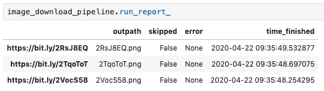

Introduction
ShopRunner has more than ten million product images that we use to train computer vision classification models. Moving those files around and processing them is a pain without good tooling. Just downloading them serially takes many days, and the occasional corrupted image can bring the whole process to a halt. Without good logging and error handling, it might then be necessary to start the process over until the next error is raised.
Over time we built up techniques for parallelizing over files, handling errors, and skipping files that had already been processed. We then incorporated those techniques into an open-source file-processing framework Wildebeest. With Wildebeest, the user specifies what files to process and how to process each one. Wildebeest then does the processing in parallel and generates a “run report” that records for each file the input and output path, whether the file was skipped, and what error if any was handled. We routinely use Wildebeest to download and resize millions of images in a matter of hours and tens of lines of code.
Basic Example
The following code uses a fairly minimal Wildebeest pipeline to download a list of images to the current working directory as PNGs, parallelizing across up to ten threads.
from functools import partial
from wildebeest import Pipeline
from wildebeest.load_funcs.image import load_image_from_url
from wildebeest.path_funcs import join_outdir_filename_extension
from wildebeest.write_funcs.image import write_image
image_urls = [
f"https://bit.ly/{filename}" for filename in ["2RsJ8EQ", "2TqoToT", "2VocS58"]
]
# Create a pipeline object, specifying how to load a file and how to
# write out each file
image_download_pipeline = Pipeline(
load_func=load_image_from_url, write_func=write_image
)
# Run the pipeline, specifying input paths, how to derive an output path
# from each input path, and how many threads to use
image_download_pipeline(
inpaths=image_urls,
path_func=partial(join_outdir_filename_extension, outdir=".", extension=".png"),
n_jobs=10,
)After it runs, the pipeline has a Pandas DataFrame containing a record of what happened with each input file stored as an attribute called “run_report_”:

The trailing underscore in “run_report_” indicates that the attribute exists only after the pipeline has been run, analogous to the Scikit-Learn convention of using a trailing underscore for Estimator attributes that exist only after the attribute has been fit (e.g. LinearRegression().coef_).
Additional Capabilities
You can do more with Wildebeest than just download images:
- Process input from any source you want, including arbitrary media types (e.g. text, video, or audio) and local as well as remote files.
- Do arbitrary processing on each file, for instance to resize each image before writing it to disk.
- Add columns to the run report that record arbitrary properties of the file, such as the average brightness of each image.
- Selectively skip files based on arbitrary criteria. For instance, you can skip an input file when a file already exists at the intended output location, making it easy to pick up where you leave off quickly after a failure.
Our Quickstart guide includes code examples for all of these scenarios.
You can also see Wildebeest in use in the open-source Autofocus project, which uses computer vision to automate animal conservation work in collaboration with the Lincoln Park Zoo’s Urban Wildlife institute. (In that project it is used under its previous name “Creevey.” That name comes from the Harry Potter series, so we changed it after becoming aware of transphobic comments by series author J.K. Rowling.)
Conclusion
Wildebeest makes big data processing jobs fast and easy. To get started with it, you can read the docs, check out the code on GitHub, or install the package from PyPI.
Acknowledgements
Thanks to Michael Sugimura for feedback on an earlier draft and to the ShopRunner data science team for contributions to the library.